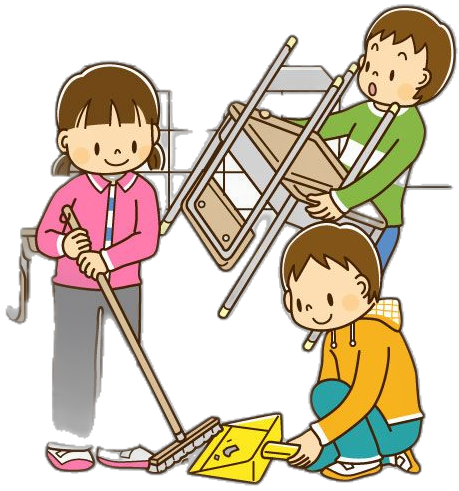
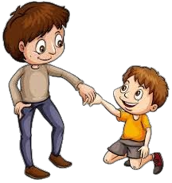
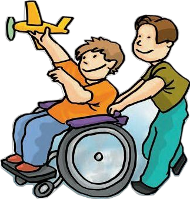
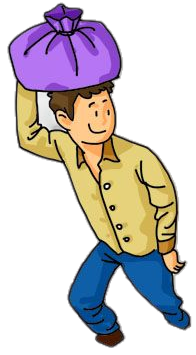
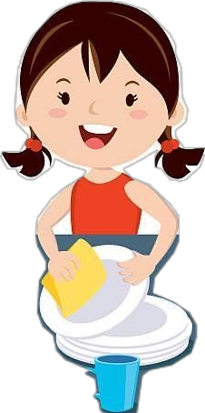
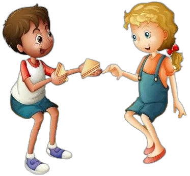

Hubungan dengan Nilai Pancasila
Perilaku tidak membalas sapaan dan berkata kasar merupakan tindakan yang tidak mencerminkan nilai-nilai kemanusiaan dalam kehidupan bermasyarakat. Dalam Sila Ke-2 Pancasila, yaitu "Kemanusiaan yang Adil dan Beradab", setiap individu diajarkan untuk menghormati martabat manusia, menunjukkan sikap sopan santun, serta memperlakukan orang lain dengan penuh rasa hormat dan empati. Membalas sapaan merupakan bentuk penghargaan sederhana kepada sesama, sedangkan penggunaan bahasa yang santun mencerminkan kepribadian yang beradab. Sebaliknya, mengabaikan sapaan dan menggunakan kata-kata kasar dapat menimbulkan perasaan tidak dihargai, merusak hubungan sosial, serta mengurangi rasa persaudaraan dalam lingkungan sekitar. Oleh karena itu, penerapan nilai Sila Ke-2 dapat diwujudkan melalui kebiasaan sederhana seperti menyapa, menghargai pendapat orang lain, menjaga tutur kata, dan menunjukkan kepedulian terhadap sesama agar tercipta kehidupan yang harmonis, damai, dan saling menghormati.
"Kesopanan dalam berbicara dan menghargai sesama adalah bentuk sederhana dari penerapan nilai kemanusiaan yang beradab."

Sikap yang Seharusnya
...




